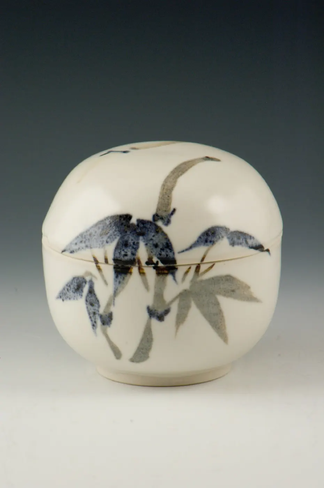
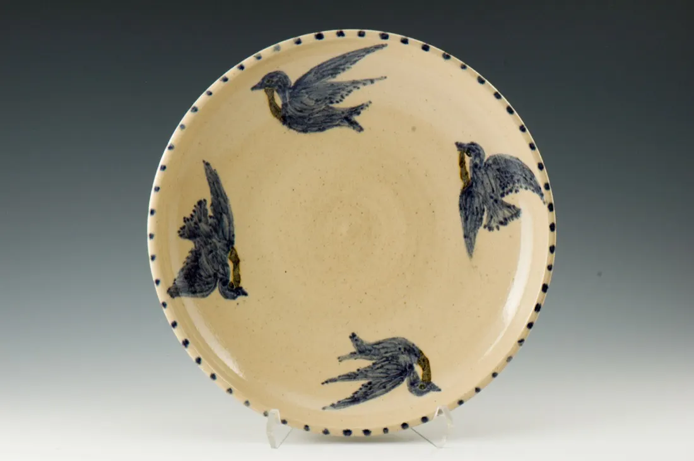
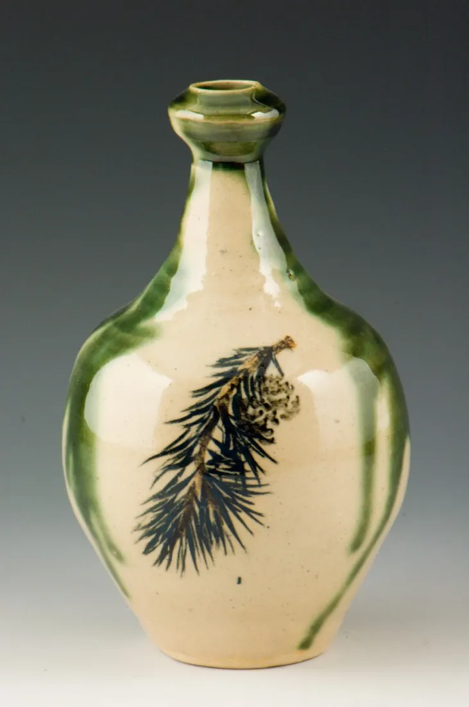
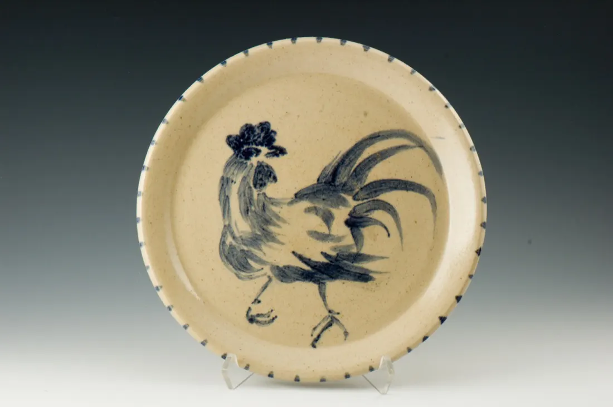
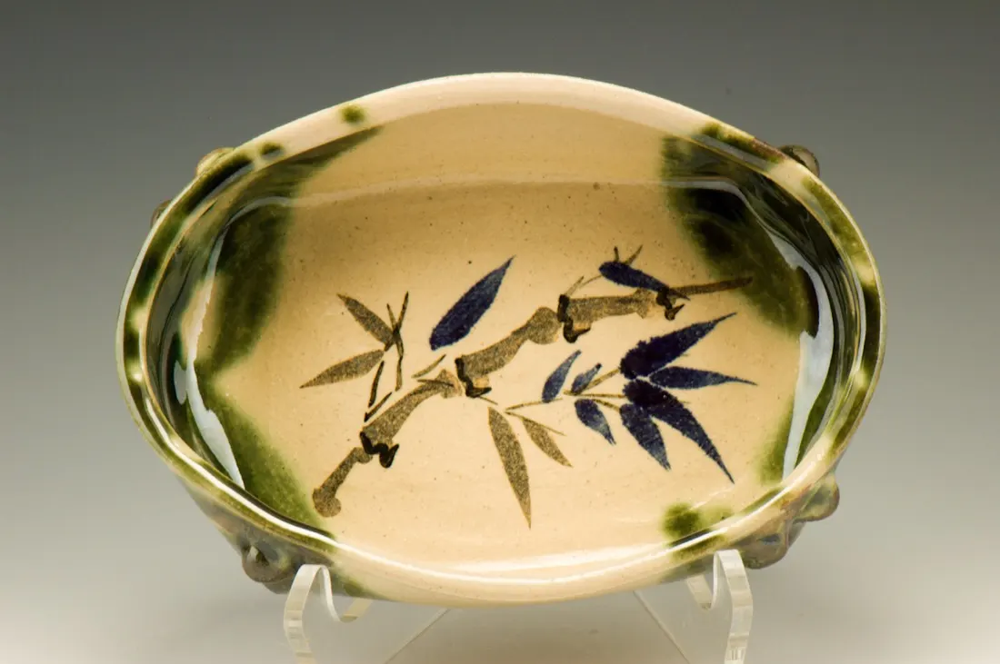
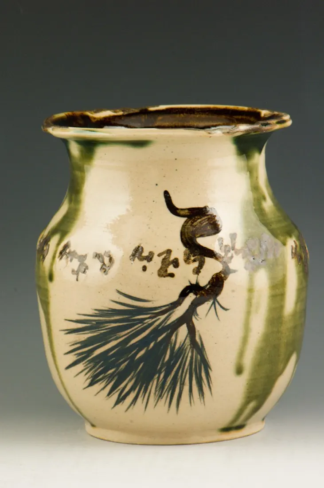
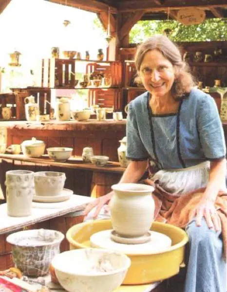
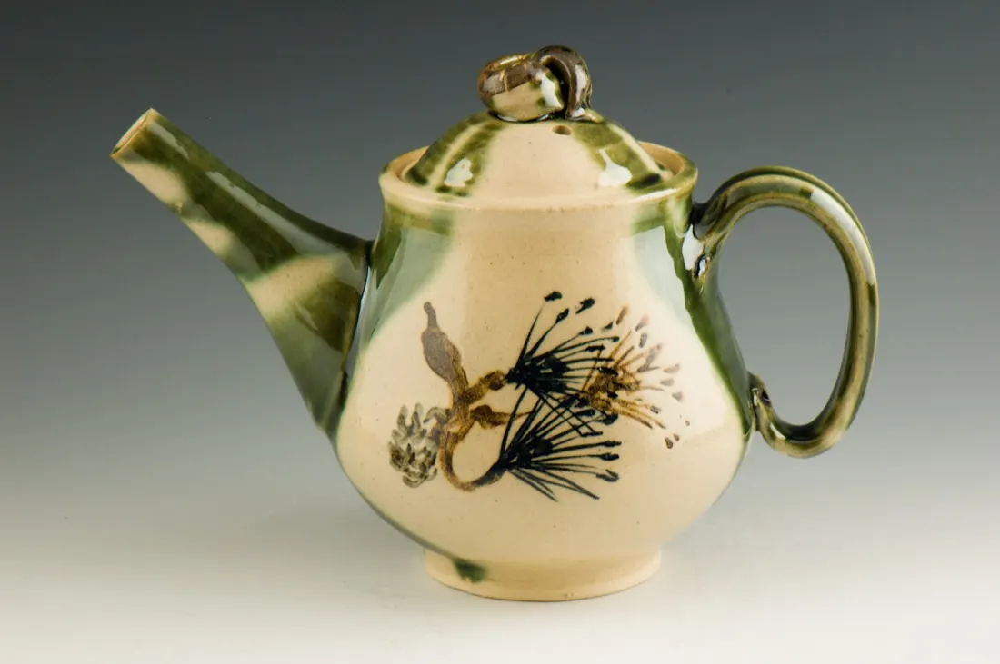
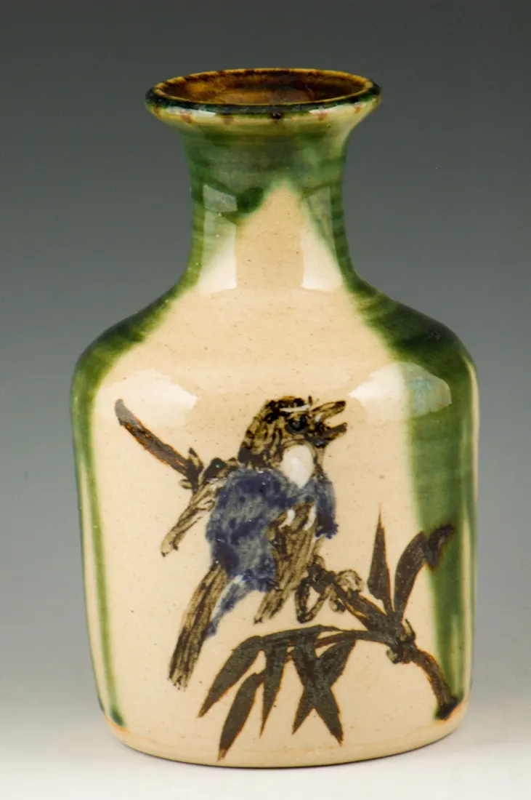
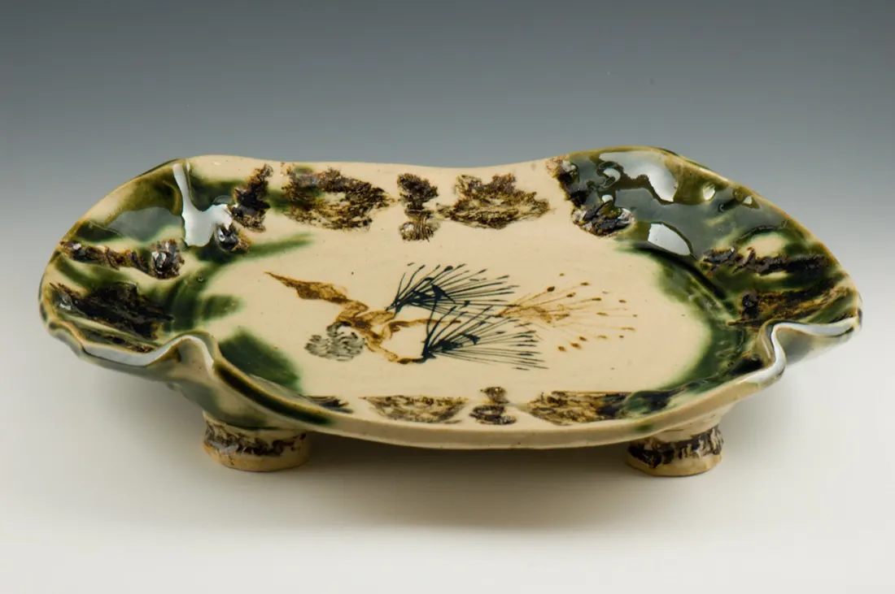

Clarissa's Clay
Functional stoneware and porcelain, thrown on the wheel and brush painted by Clarissa Hollenbach Enck in Lebanon County, Pennsylvania.
I use sumi-e style brush painting with bamboo brushes. Its simplicity and relaxed feeling enhance the motifs.
Email Clarissa Visit the studio by appointment

Natural subjects, painted before the fire
Much of my work I decorate with natural subjects or calligraphy, brush painted with earth oxides before firing. Clear glazes let my clay bodies show off their natural state, complementing the natural subjects.

Handcrafted in the truest sense
I mix natural, crushed clays and stone to form my own clay bodies, and I formulate and make my own slips, stains and glazes.
The clay is aged six months to a year before it is ready for the potter's wheel. After the wheel, each piece spends thirty hours or more in the kiln, through two separate firings at temperatures as high as 2330 °F.

Made for every day
The glazes I use are lead-free and durable for everyday use. My work can be used safely in dishwashers, microwaves, and ovens that have not been preheated first.
Extreme temperature changes could cause harm, so let a piece warm up with the oven.


How I came to clay

- As a childMud pies and small pots after rain storms, in Berks County, Pennsylvania.
- 1972A pottery class through the Denver Free University rekindled that passion.
- 1975Bachelor of Arts, Millersville University.
- 1976 and 1977Apprentice potter at the Capricorner, near Carlisle, Pennsylvania.
- 2007 to 2011Exhibitions at Radius, The State Museum of Pennsylvania in Harrisburg, the Pennsylvania Guild of Craftsmen Gallery in Lancaster, and the Reading Public Museum.
- TodayJuried member of the Pennsylvania Guild of Craftsmen and Lancaster Designer Craftsmen, and a member of the Central Pennsylvania Potters Information Group.

Visit the studio
My studio is in an 18th-century summer house in the Millbach area of eastern Lebanon County, Pennsylvania.
- Open House, every year
- The weekend before Thanksgiving.
- Cherry Fair, Schaefferstown
- At Historic Schaefferstown's annual Cherry Fair and Pennsylvania German Folklife Festival, you will find me at my potter's wheel, demonstrating.
- By appointment
- The studio is open for sales by appointment. Write and we'll find a time.
My work is also for sale at art and craft shows in south central Pennsylvania.

More in the gallery
Photographs of my work, by kind of piece.
